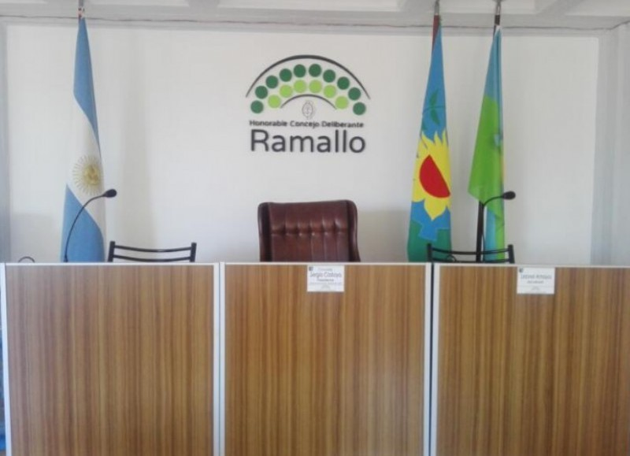
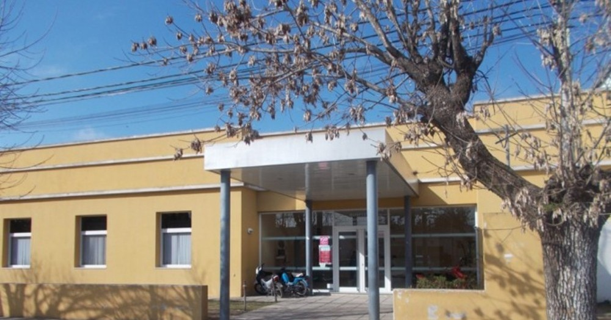

Termina el año con aumento: las tasas municipales superaron el 30 por ciento
El Concejo Deliberante trató en la Asamblea de Mayores Contribuyentes, la ordenanza Fiscal e Impositiva en la cual, la comuna, pretendió un aumento de tasas del 30,5 por ciento. Este proyecto se acompañó del Presupuesto 2021, el cual tenía previsto dotar a la Administración Central más de 1300 millones de pesos y otros 400 millones de pesos para el funcionamiento del Hospital Gomendio.
El Hospital José María Gomendio sumará nuevos equipos para atender necesidades sanitarias
A través del intendente Gustavo Perié, el Hospital José María Gomendio continuará sumando más equipamiento para atender las necesidades sanitarias de la comunidad. “El Hospital Gomendio contará próximamente con una torre de cirugía, equipamiento quirúrgico y una lámpara de quirófano, que permitirán que todos los vecinos puedan acceder a microcirugías, lo que marca un nuevo hito.